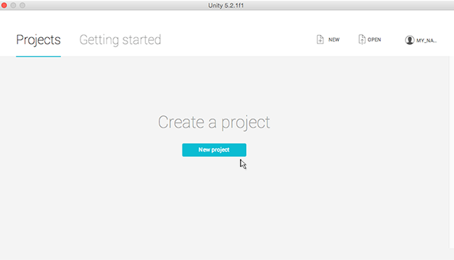
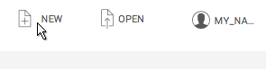
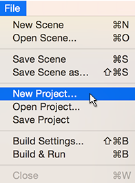
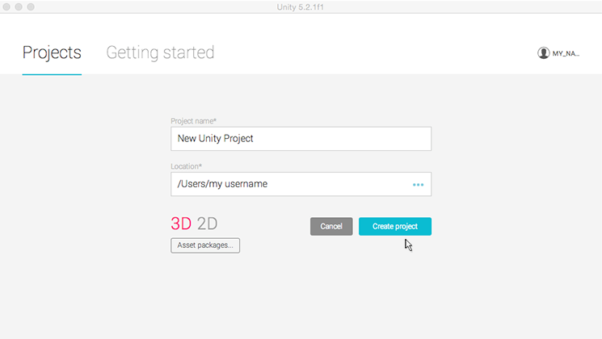
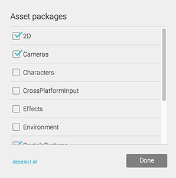

Tema: Iniciando en Unity
-
Iniciando Unity por primera vez
Siempre que lance el editor de Unity, se muestra la Pantalla de Inicio. Si no existe ningún proyecto de Unity en su ordenador, o Unity no sabe dónde se encuentran, pedirá que se cree un proyecto.
Para comenzar, puede hacer clic en New project lo que le llevará a la vista Crear Proyecto de la Pantalla de Inicio. Para averiguar más, vea la sección sobre esto en Creando un Proyecto. Alternativamente, si ya tiene un proyecto Unity en su ordenador, puede abrirlo desde esta pantalla. Vea Abrir un Proyecto para averiguar más.

-
Creando un Proyecto
Cada vez que inicie el editor de Unity. la Pantalla de Inicio se mostrará. Desde ahí, puede seleccionar NEW en la esquina superior derecha para cambiar a la vista Crear Proyecto.

Para mostrar la vista Crear Proyecto de la Pantalla de Inicio cuando ya esté en el editor de Unity, seleccione New Project… desde el menú File.

Desde la vista Crear Proyecto de la Pantalla de Inicio, puede nombrar, establecer opciones, y especificar la localización de su nuevo proyecto.

Para crear un nuevo proyecto:
-
El nombre por defecto para New Unity Project pero puede cambiarlo siempre que quiera. Escriba el nombre con el que quiere llamar a su proyecto en el campo Project name.
-
La localización por defecto para su carpeta personal en su ordenador, pero puede cambiarla. BIEN POR (a) Escriba aquí dónde quiere almacenar su proyecto en su ordenador en el campo Location. O (b) Haga clic en los tres puntos azules ‘…’. Esto mostrará el Finder de su ordenador (Mac OS X) o el Explorador de Archivos (Windows).
-
Entonces, en el Finder o en el Explorador de Archivos, seleccione la carpeta de proyecto en la que quiera guardar su nuevo proyecto, y seleccione “Elegir”.
-
Seleccione 3D o 2D para su tipo de proyecto. Por defecto es 3D, resaltado en rojo para mostrar que está seleccionado. (La opción 2D hace que el editor de Unity muestre sus características, y la opción 3D muestra las características 3D. Si no está seguro de qué elegir, déjelo en 3D; puede cambiar esta configuración más tarde.)
-
Hay una opción para seleccionar Asset packages… para incluir en su proyecto. Los paquetes de Assets son contenido pre-elaborado, como imágenes, estilos, efectos de iluminación y y controles de personaje en juego, entre otras útiles herramientas de creación del juego y contenidos. Los paquetes de assets ofrecidos aquí son gratuitos, empaquetados con Unity, y puede usarlos para comenzar con su proyecto. BIEN PUEDE: si no quiere importar esos assets empaquetados, o no está seguro, simplemente ignore esta opción; puede añadir estos assets y muchos otros posteriormente vía el editor de Unity. O: Si no quiere importar esos assets empaquetados ahora, seleccione Asset packages…_ para mostrar la lista de assets disponible, marque los que desee, y haga clic en Done__.
-
Ahora seleccione Create project y ¡todo estará listo!
